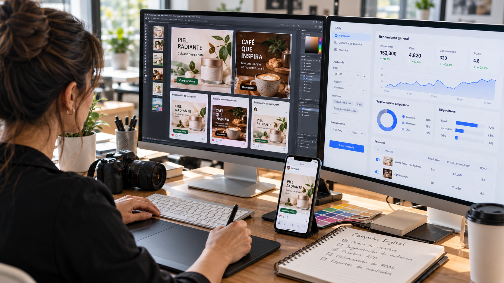

Guía Integral de Emprendimiento Digital
Aprende a optimizar tu rendimiento y a crear contenido con estrategia: construye tu marca, monta tu tienda virtual, diseña anuncios y elige las herramientas correctas, paso a paso.
Empezar a explorar ➔
Herramientas digitales para emprender
Los grandes multiplicadores de productividad, agrupados por área. Desliza para conocerlas.
Rendimiento y creación de contenido
El éxito de un proyecto ya no depende solo de la calidad del producto o servicio, sino de la capacidad de destacar, generar confianza y captar la atención de tu audiencia meta.
El rendimiento en contenido es optimizar recursos, ser consistente y convertir las interacciones digitales en resultados de negocio medibles. Así se posiciona una marca, se automatizan ventas y se construye una comunidad leal.
Cómo crear una marca personal
Es la huella profesional que dejamos en la mente de la audiencia, y genera más confianza que las marcas corporativas tradicionales.
Propósito y nicho
Identifica tu propuesta de valor, tus áreas de especialidad y la solución específica que ofreces a un segmento de mercado.
Identidad y tono de voz
Define tu paleta de colores, tu tipografía y el estilo narrativo: cercano, técnico o inspirador.
Posicionamiento
Comparte conocimientos útiles en LinkedIn, Instagram o YouTube para demostrar autoridad.
Storytelling y autenticidad
La audiencia conecta con historias de éxito, y también con los aprendizajes y desafíos superados.
Tiendas virtuales y e-commerce
El comercio electrónico es el motor de ventas global. Una tienda sólida exige planificar la infraestructura tecnológica y la experiencia del usuario (UX).
Dos modelos de negocio
E-commerce propio
Shopify, WooCommerce o Tiendanube. Control absoluto sobre la marca, la base de datos de clientes y las promociones.
Marketplaces
Amazon o Mercado Libre. Acceso inmediato a millones de compradores activos, a cambio de comisiones por venta.
Factores clave de éxito
Mobile-First
De las compras en línea se hacen desde teléfonos inteligentes.
Pagos seguros
Stripe, PayPal, Mercado Pago o Addi dan confianza e instantaneidad.
Logística y envíos
Tiempos de entrega transparentes, costos claros y empresas logísticas locales e internacionales.

Diseño de publicidad digital
Permite acelerar el crecimiento con una segmentación precisa del público y la optimización constante del retorno de inversión (ROAS).
Componentes de un anuncio de alto impacto
Gancho
Los primeros 3 segundos de un video, o el titular de una imagen, deben captar la atención al instante.
Mensaje claro y solución
Explica de forma directa el problema que resuelve el producto o servicio.
Llamado a la acción (CTA)
Indica qué hacer después: “Compra ahora”, “Regístrate hoy” o “Descarga la guía”.
Plataformas principales
Meta Ads
Facebook e Instagram. Ideal para ventas directas B2C, remarketing y segmentación por intereses.
Google Ads
Búsqueda y YouTube. Captura la intención de compra cuando buscan soluciones específicas.
TikTok Ads
Excelente para audiencias jóvenes mediante videos orgánicos con formato nativo.

Creación de contenido para redes sociales
La constancia depende de un sistema eficiente que evite el agotamiento del creador. Esta es la estructura básica:
Educativo
Tutoriales, guías paso a paso y consejos que posicionan la marca como experta.
Entretenimiento / tendencia
Adaptación de formatos populares para aumentar el alcance masivo.
Prueba social / venta
Testimonios de clientes, casos de éxito y ofertas directas.

Recomendaciones finales
El éxito en el emprendimiento digital requiere equilibrar la estrategia de contenidos con la eficiencia operativa. No se trata solo de publicar con frecuencia, sino de conectar cada pieza con un embudo de ventas estructurado dentro de un comercio electrónico accesible.
Para comenzar:
- Enfócate en definir tu marca personal.
- Domina una o dos herramientas digitales clave.
- Mantén la consistencia antes de escalar hacia campañas publicitarias pagadas.